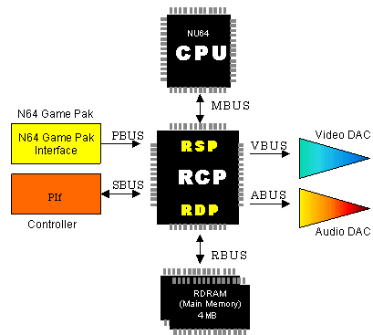

1.2.1 Overview of N64 Resources
The following figure gives a summary overview of the N64 hardware architecture. For details, please see the Chapter 3 of the N64 Programming Manual. Basically, the RCP (in the center of the following figure) is the primary workhorse of the N64. All data passes through the RCP.

Nintendo® Confidential
Copyright © 1999
Nintendo of America Inc. All Rights Reserved
Nintendo and N64 are registered trademarks of Nintendo
Last Updated March, 1999